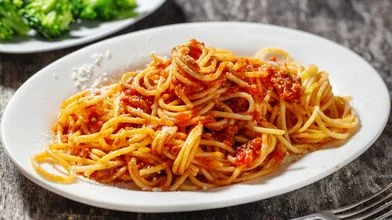

Macarrão
⏱️ 25 min
🍽️ 2-3 porções
⭐ Fácil
Ingredientes
- 250g de macarrão
- 1 sachê de molho de tomate
- 2 dentes de alho
- 1 colher de óleo ou azeite
- Sal a gosto
- Queijo ralado (opcional)
Modo de preparo
- 1. Ferva água com um pouco de sal
- 2. Coloque o macarrão e cozinhe por cerca de 10 minutos
- 3. Em outra panela, aqueça o óleo e frite o alho
- 4. Adicione o molho de tomate e deixe aquecer
- 5. Escorra o macarrão e misture com o molho
- 6. Finalize com queijo ralado
Video Para melhor guia
Video Da Receita
A receita Não condis com os video(São apenas videos expermentais)